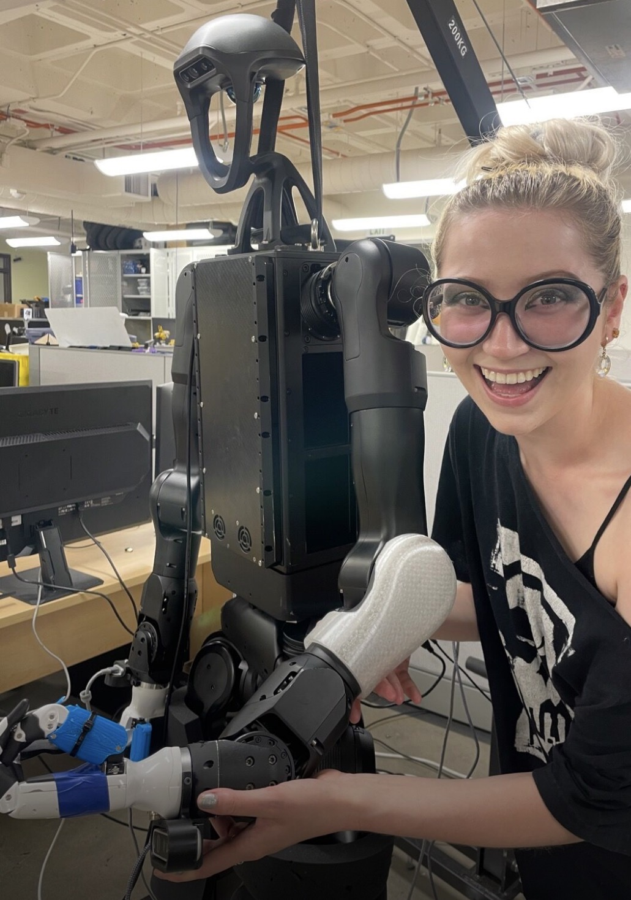
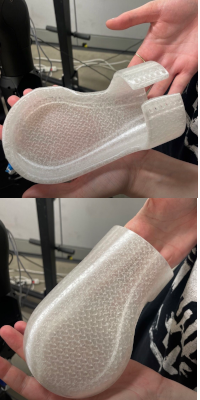

Robot Fashion


Overview
Experimental 3D printed fashion accessories designed to protect humanoid limbs from damage when falling. Resulted from previous work on 3D printing soft skin for the HIRO group's Franka robot. Using Blender + GenTact (a Blender extension made by lab member Carson Kholbrenner) I created TPU (thermoplastic polyurethane) accessories that utilized the material's soft, bouncy properties to protect the robot's limbs from excessive force when falling.
Collaboration with HIRO group at CU Boulder.
Skills
3D printing, CAD design, TPU printing, multimaterial printing
Topics
Human-Robot-Interaction, 3D printing, tactile interaction design, fashion
More Info
After joining the HIRO lab, I began working with PhD student Carson Kholbrenner on his soft robotic skin project, where I learned how to use Blender and Carson's extension GenTact Toolbox to design skins directly on top of the robot's morphology. Once I was familiar with the routine CAD-to-3D printing pipeline, I began exploring various filaments such as Verashore (a filament that foams at high temperatures) and TPU (a soft, bouncy plastic) to expand sensory interactions between person and robot. I settled on TPU, given its springier properties and ability to contract under pressure and absorb excess force.
Before designing fashion accessories, I was asked to experiment with creating a dual-layer skin using both PLA and TPU to mimic the way our own human skin changes color when gently pressed. I turned to cosplay and diorama building communities for inspiration, particularly interested in the ways they manipulate textures of plastic and foam to evoke other materials. I designed a blunted spiked PLA underlayer, which would press up against a softer upper layer. When colliding with an object this second layer would press down into the blunted PLA spikes, and the tops of the spikes would be seen and registered by an external camera, communicating pressure applied to the skin!
We ultimately decided on using TPU since it provided an easier, one-time printing process. Incorporating conductive PLA in our design to embed tactile sensing into the skin itself turned this into a multi-material printing project! Using the lab's Prusa XL I learned how to properly prepare, troubleshoot, and print with multiple materials.
The resulting skins were made entirely of TPU and conductive PLA. They were flattened from their original hoop-like structure to limit unexpectedly catching on surrounding objects and adhered to the humanoid's limbs avoiding joints and being mindful of configuration spaces for each limb.